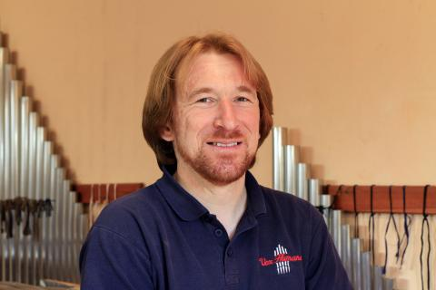

A CSAPAT
ECHIPA
Mesterségbeli tudás és restaurálási szakértelem — egy csapatban
Măiestrie artizanală și expertiză în restaurare — într-o singură echipă

Bartis Szabolcs
Alapító, orgonaépítő mester
Fondator, maestru constructor de orgi
A Vox Humana Kft. alapítója és vezetője. Több mint két évtizedes tapasztalat az orgonaépítés és restaurálás terén. Románia egyetlen teljes körű orgonaépítő műhelyét vezeti.
Fondatorul și directorul Vox Humana SRL. Peste două decenii de experiență în construcția și restaurarea de orgi. Conduce singurul atelier complet de construcție de orgi din România.

Csortán Tünde
Restaurálási szakember
Specialist restaurare
Képzett restaurátor, a templomi belsőterek és szakrális műtárgyak konzerválásának és helyreállításának specialistája. Az új szolgáltatási irány kulcsembere.
Restaurator calificat, specialist în conservarea și restaurarea interioarele bisericești și obiectelor sacre de artă. Persoană cheie pentru noua direcție de servicii.